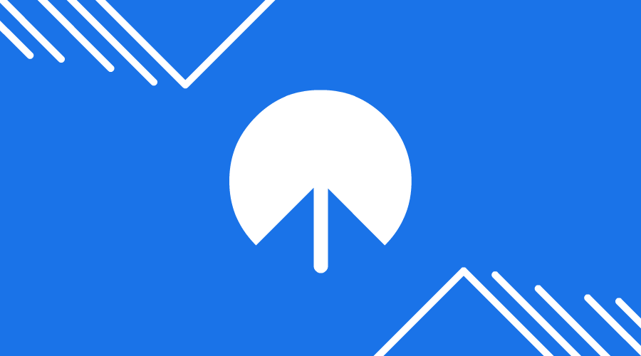
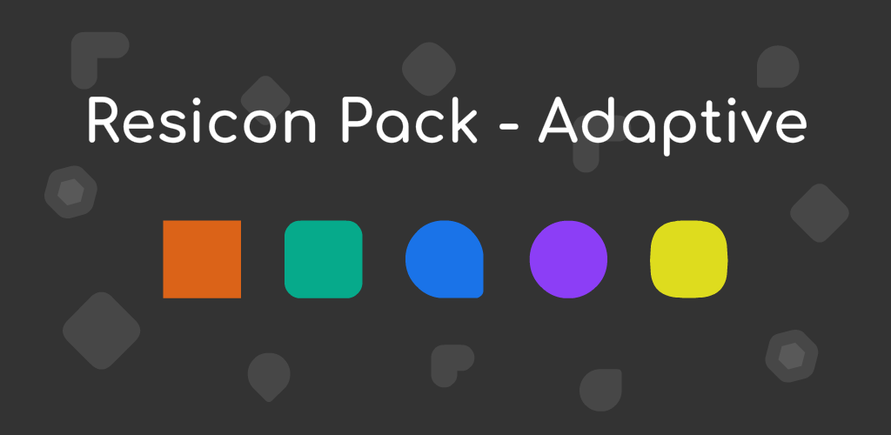

Home

Currently a Simple Boy and a High School Student.
I'm also known as Sarsa2703.
I love Colors and Flat Theming.
Projects

Resicon Pack - Flat
A Minimal Icon Pack Based on My Own Design Guidline. Mainly For Customizers and Color Lovers.

Resicon Pack - Adaptive
Nothing Much, Just Adaptive version of Resicon Pack.